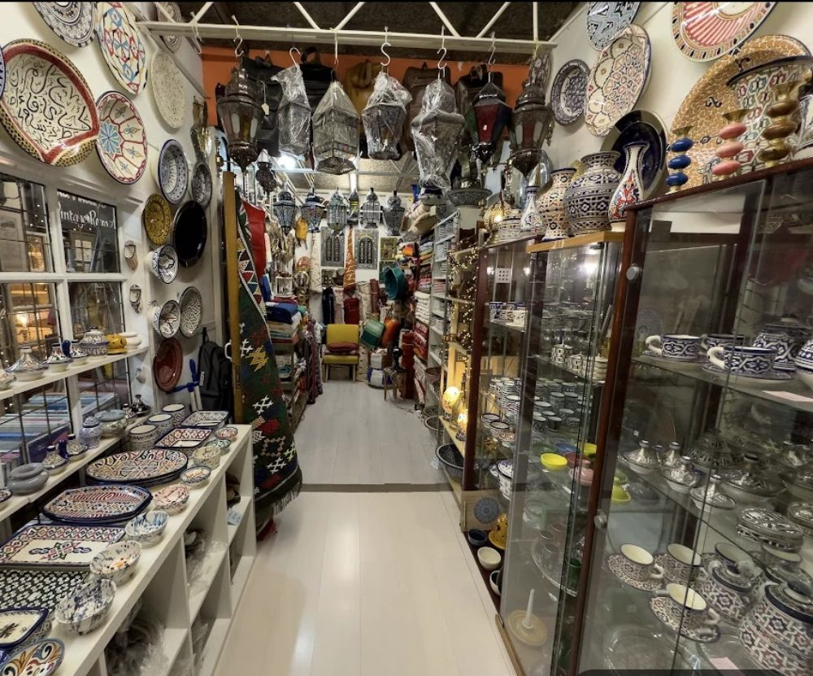
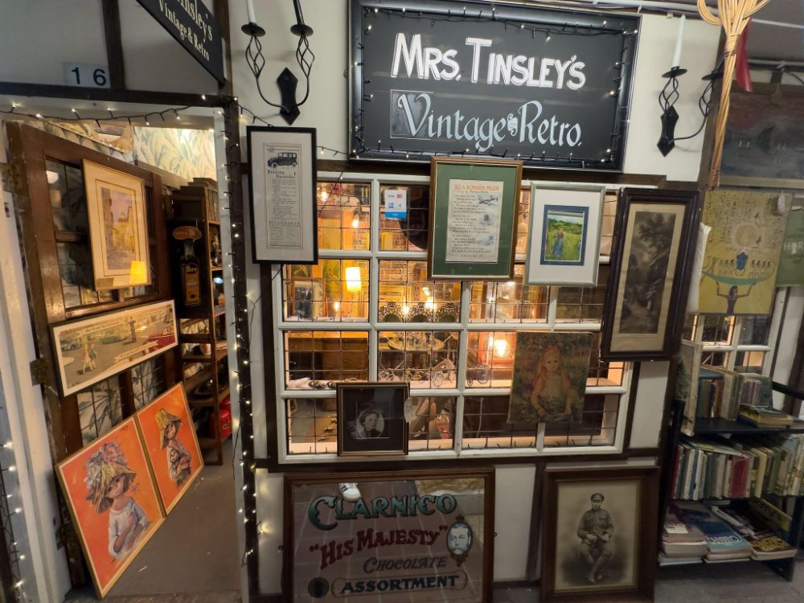

The Shops
24 independents across 33 units, Tuesday to Saturday. Every shop is run by the person behind the counter, so most keep their own days and hours inside the market’s opening times. Ring ahead if you are making the trip for one in particular.
One shop at a time
-

Moroccan Corner
Discover Moroccan artisan goods and crafts at Moroccan Corner. This small independent shop brings a taste of Moroccan craftsmanship to Wood Street Indoor Market.
-

Mrs Tinsley's Vintage & Retro
Explore furniture, lighting and decorative finds from the past at Mrs Tinsley’s Vintage & Retro. This small vintage and antiques shop also stocks art, advertising collectibles, clothing and textiles.
Tuesday to Saturday 10am until 4pm
-
Tokens & Treats
Make a gift feel personal at Tokens & Treats. Discover personalised cards, bags and T-shirts, alongside wedding favours and decorated glassware for celebrations and thoughtful everyday presents.
-
Lilac Domino
Get your next craft project started at Lilac Domino. Browse wool, yarn, sewing and needlework supplies, whether you enjoy knitting, stitching or making something by hand.
-
Tony Shoe Sale
Discover rare second-hand shoes at Tony Shoe Sale, specialising in trainers, high-tops and casual footwear. Browse shelves packed with distinctive styles, alongside a selection of bags and denim clothing.
-
Ray's Records
Make time for a musical browse at Ray’s Records, one of Wood Street Indoor Market’s independent record shops. Explore the selection and see what catches your ear.
-
Malaya Therapies
Take time for yourself at Malaya Therapies. Run by Kylie Marks, the practice offers osteopathy and a range of massage treatments, including deep tissue, sports, pregnancy and lymphatic drainage massage.
Wednesday to Saturday: 10am to 5pm
-
Claudia Rose Lashes/Mimi Rose
Discover your lash style at Claudia Rose Lashes. Choose from classic, hybrid and volume eyelash extensions, with infill and removal appointments also available.
-
Beauty @ Anu
Enjoy a little time for yourself at Beauty @ Anu. This beauty salon offers eyebrow threading and tinting, waxing, facials and Indian head massage.
-
Mike's Record Shop
Dig into second-hand vinyl at Mike’s Record Shop. Browse music spanning rock, punk, new wave, blues, jazz, folk, reggae and soul, and look out for an old favourite or a new discovery.
-
SRK Delight
Freshly made drinks and a taste of Jamaica await at SRK Delight. Semone’s juice bar serves fruit juices, smoothies and fruit cups, alongside sugarcane juice, coconut water and Jamaican drinks and snacks.
Wednesday to Saturday, 11.00am to 4.00pm
-
RoseCraft Jewellers
Create something personal or give a treasured piece a new lease of life at RoseCraft Jewellers. Discover bespoke jewellery and repair services, including stone replacement, engraving, polishing and refurbishment.
By appointment
-
Rinkies Toys
Find something to spark playtime at Rinkies Toys. Explore toys, games and gifts for children, from baby toys and cuddly plush characters to LEGO and action figures.
-
Books From Boxes
Find your next read at Books From Boxes, an independent bookshop tucked inside Wood Street Indoor Market. Browse a mix of new and second-hand books, alongside a small selection of stationery.
Saturday 10am to 5pm
-
Vintage Tony
Explore men’s fashion from decades past at Vintage Tony. Specialising mainly in the 1960s and 1970s, the shop offers vintage clothing for sale and hire, including sportswear and trainers.
-
Pritzy Ltd
Add a little character to your wardrobe or home at Pritzy. Discover vintage-inspired jewellery, bags, hats and fashion accessories, alongside bridal accessories, gifts and decorative pieces for the home.
-
Sustainable style by S&K
Give pre-loved fashion another outing with Sustainable style by S&K. Browse vintage and retro clothing and find something with its own history to add to your wardrobe.
-
Music Family Records
Browse records and CDs at Music Family Records. Take a moment to explore the music on offer, revisit a favourite or find something new for your collection.
-
Timmy Tapers Ltd
Freshen up your look with Timmy Tapers. The barbering business offers haircuts, with mobile and home appointments currently advertised. Get in touch directly to arrange a booking.
Tuesday to Saturday: 10am to 5pm
-
Mykeyartzone
Discover colourful artwork at Mykeyartzone, a small studio gallery in Wood Street Indoor Market. Browse portraits, landscapes and illustrated pieces in a variety of styles, and find something to bring character to your walls.
-
Disc Disciple Records
Explore second-hand vinyl at Disc Disciple Records, with music spanning rock, punk, new wave, blues, jazz, folk, reggae and soul. Browse for a much-loved album or discover something new for your collection.
-
Vintage Corner
A fuller listing for this shop is on its way.
-
Flowerie88
Discover handmade jewellery and fashion accessories by Japanese designer and maker Rie Tanabe at Flowerie88. The shop also offers repairs, alterations and remodelling to give treasured jewellery a fresh chapter.
Wednesday 11.00 to 5.00, Thursday 11.00 to 3.00, Friday 11.00 to 5.00, Saturday 11.00 to 4.00
-
Jimmy Mack Vintage & Retro
Browse fashion and finds from the past at Jimmy Mack Vintage & Retro. Discover vintage and retro clothing alongside film annuals and collectibles for a little everyday nostalgia.
Use the arrow keys, or pick a shop from the list below.
9 units are currently available to let: 3 in Antique City (A4, A7, A11) and 6 in Market Side (M4, M5, M31, M32, M33, M38). Enquire about taking one on.
Search the market
Try a shop name, a trade or a unit number. Or pick a trade and browse.
Showing all 24 shops, the ones with photos first
Nothing under that name, yet.
The corridor is full of things that don’t match their labels. Clear the search and browse the loop, or ask any trader when you visit.
Clear everythingReckon the market needs it? Open the shop yourself →